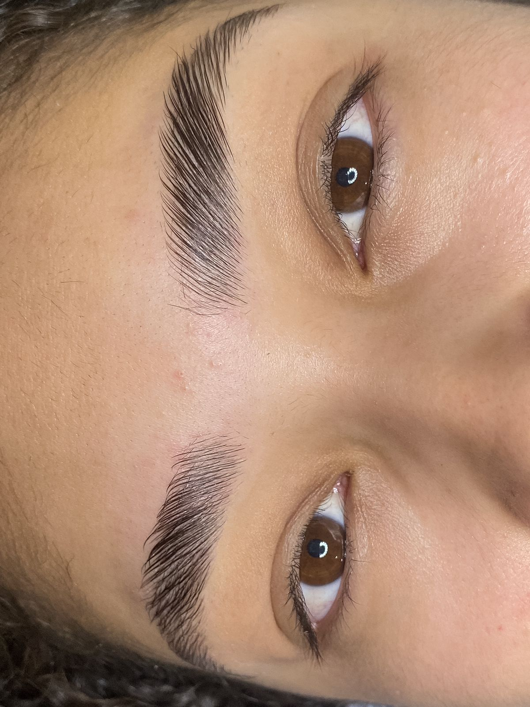
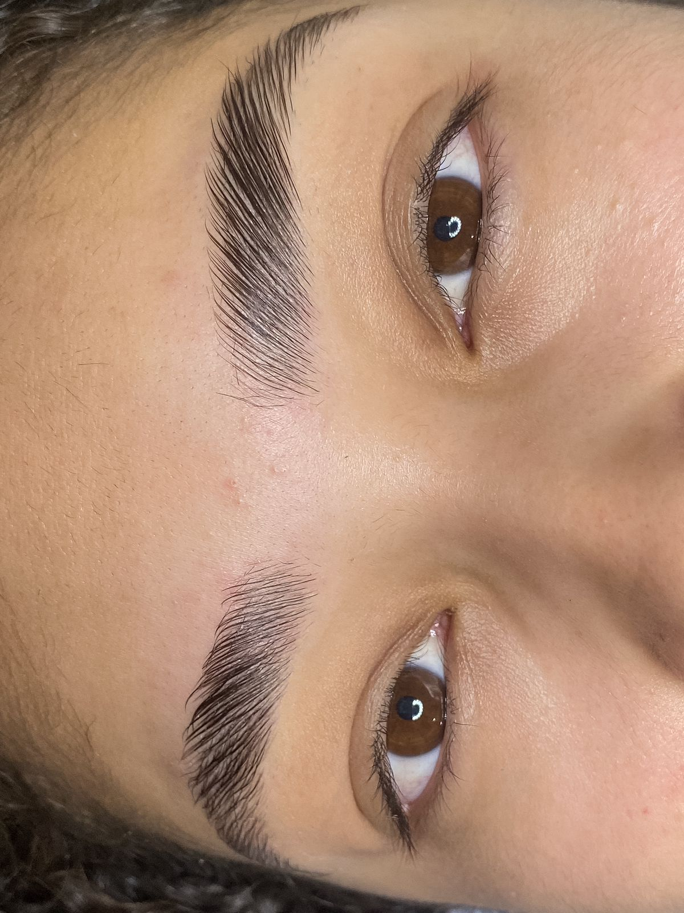

Lanny Brito
Studio Beauty
Olá! Sou Lanny Brito, especialista em Maquiagem e design de sobrancelhas. Com anos de experiência, estou aqui para realçar sua beleza natural e aumentar sua confiança através das makes e sobrancelhas perfeitas.
Nossos Serviços
Design Personalizado
Mapeamento respeitando o formato natural das sobrancelhas, realçando e valorizando o olhar através do design.
Design Com Henna
Realizamos o design personalizado com aplicação de henna, que tem como objetivo principal tingir a pele corrigindo falhas indesejáveis. Durabilidade de 3 a 8 dias..
Micropigmentação Shadow
Uma técnica mais natural, esfumada, podendo ser mais clarinha ou mais marcada, indolor e muito utilizada por quem é acostumada a usar henna para preencher as falhas. Duração de 2 a 3 anos.
Brow Lamination
Técnica que tem como objetivo principal aumentar a espessura das sobrancelhas de forma natural. Seu resultado é de sobrancelhas mais volumosas e sempre alinhadas, preenchendo falhas indesejáveis, você tem a liberdade de escolher se deseja os fios mais arrepiados ou alinhados. Durabilidade de até 2 meses dependendo do ciclo de crescimento dos fios.
Micropigmentação fio a fio híbrida
Micropigmentação feita no tebori, fios realistas desenhandos no inicio da sobrancelha que seja falhada e o restante da sobrancelhas esfumada. Ideal para pessoas que tem poucos fios e gosta da frente mais naturalzinha.
Depilação Buço e Axila
Procedimento realizado na cera, e ao finalizar uma massagem com loção calmante. De brinde uma esfoliação labial com um Lip Oil para remover células mortas e devolver a hidratação dos lábios.
Make Clean "Dia"
Pele, colo, batom, técnica de olhos sem gatinho, sem cílios.
Make Clean "Noite"
Pele mais marcada, batom, técnica de esfumado podendo conter delineado esfumado e cílios.
Make Top Evento
Make elaborada, podendo ter qualquer delineado, qualquer técnica, para formatura, casamento, balada etc...
Galeria de Trabalhos
 

O que dizem nossos clientes
"Eu amei e todos que estavam comigo amaram também e perguntaram quem fez, com certeza te indiquei, obrigada. Deus te abençoe."
- Isabella Doria
"A make foi feita às 16:00hrs da tarde, peguei chuva, chorei e ficou intacta o evento inteiro."
- Rahuany R.
"Amei a maquiagem haha ficou intacta até de manhã, ganhou uma cliente agora kk Parabéns pelo trabalho impecável."
- Gabriela G.
"Amei seu trabalho, arrasei nas fotos da formatura, make top cheguei em casa do mesmo jeito que fui, perfeito, excelente profissional você."
- Karol
"Oi, Tudo bem? amei a maquiagem, ficou perfeita, muito obrigada."
- Eliz Alves
Entre em Contato
Agende seu horário ou tire suas dúvidas:
Telefone: (21) 96741-7251